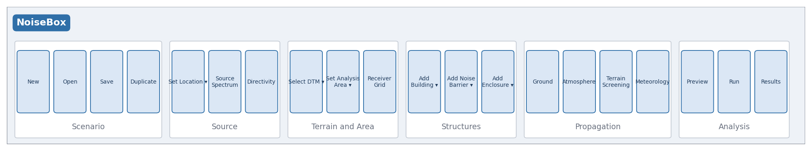
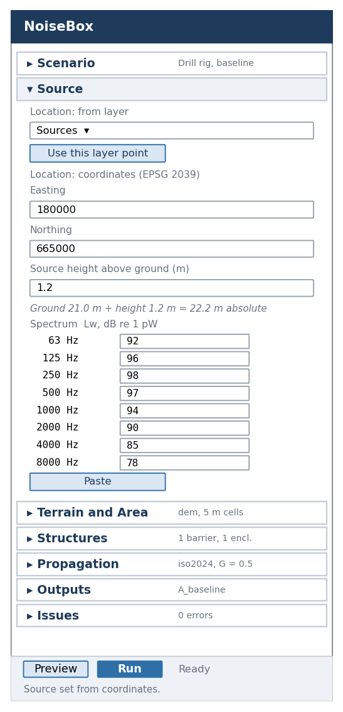
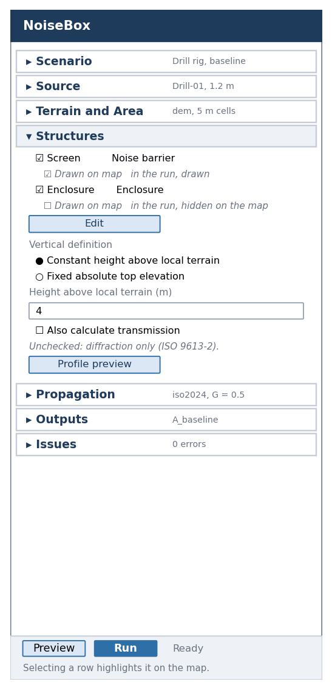
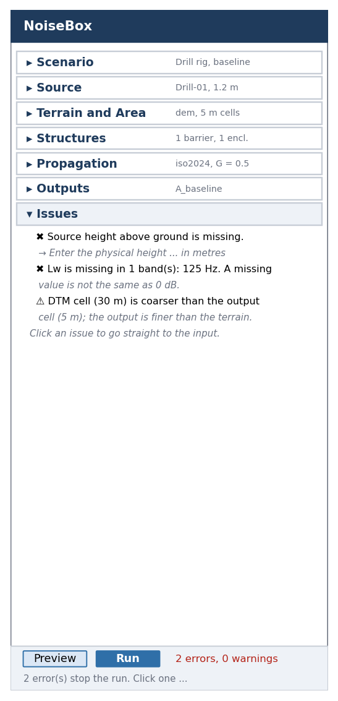
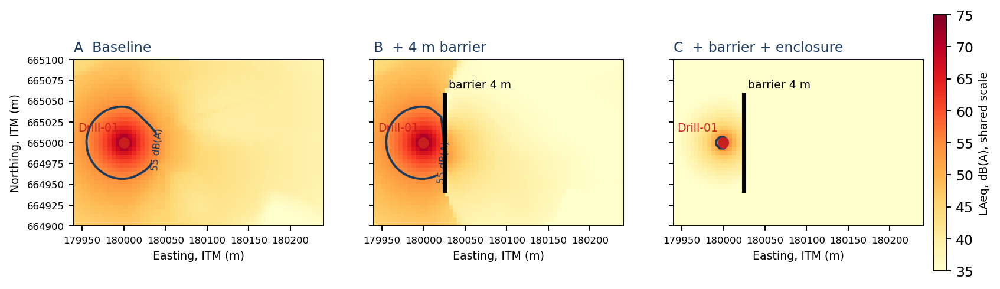
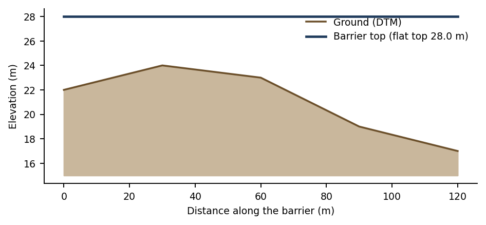
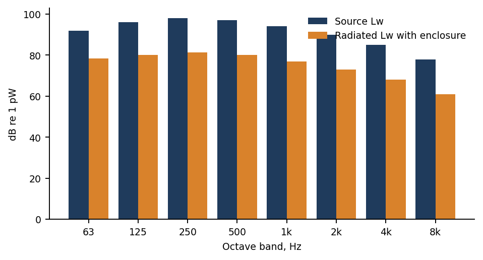
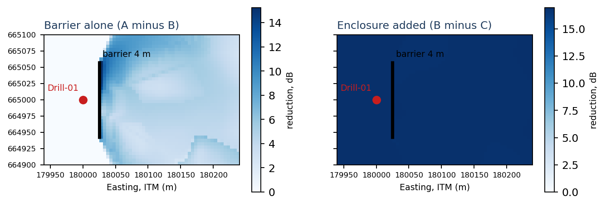

dist\NoiseBox.esriAddinX) and pass static checks
(Esri's DAML schema, class names, XAML bindings), but they have never been loaded or clicked in ArcGIS Pro: no automated way to drive Pro's window was available.
Pictures of the ribbon and pane in this manual are therefore schematic drawings made from the design, not screenshots. Every map, chart and number in the
worked example is real output of the engine. Please report anything that behaves differently from this manual when you first use the ribbon.NoiseBox predicts the sound level of a point source at every cell of a grid, the way ISO 9613-2 describes it, and puts the result on your map. You describe a scenario (a source and its spectrum, terrain, an area, and optionally buildings, noise barriers and an enclosure around the source). NoiseBox checks it, calculates it in your own validated MATLAB code, and adds a named group of rasters to Contents. You can then change one thing (a taller barrier, an enclosure) and compare.
Every input is checked before anything runs. A problem is shown as a numbered message that says what is wrong, why it matters, and what to do. Clicking a message takes you to the input. There are 256 such messages (Appendix A).
ArcGIS Pro (ribbon + pane) writes a scenario file. Pro's Python reads it and starts a small worker in Python 3.10 that owns MATLAB. MATLAB runs your matlab\core files. No acoustics are calculated anywhere else, so editing a .m file changes the next run.
| Way | For | Status |
|---|---|---|
| Ribbon tab + pane (the add-in) | Interactive: pick or draw the source, structures and area on the map, see them update, run, compare. | Compiled, packaged, statically checked; not yet run inside Pro |
Toolbox NoiseBox.pyt (6 tools incl. Run Scenario) | Dialog tools, scripts, batch runs and saved scenario files. Same engine. | Built and tested |
| Item | Version | Notes |
|---|---|---|
| ArcGIS Pro | 3.5 or later | Tested with 3.5.3 (Python 3.11 inside Pro). |
| MATLAB | R2022b to R2024b | Licensed on that computer. Tested with R2023a. No toolboxes are used. |
| Python 3.10 (64-bit) | 3.10.x | From python.org. Needed only because the MATLAB Engine for Python does not run in Pro's Python 3.11. Used in a separate environment. |
| This NoiseBox folder | Copy it anywhere (not inside a folder that OneDrive/Dropbox is syncing is best). | |
| Only to rebuild the ribbon add-in: .NET SDK | 8 or newer | winget install Microsoft.DotNet.SDK.8. The computer that uses the add-in does not need it. |
| A DTM raster (optional) | any single-band elevation raster | The example uses sample\dem_sample.tif. For Israel, setup\make_israel_dem.py downloads SRTM 30 m. |
Do these once per computer. Everything is relative to the NoiseBox folder, so the folder can be moved or copied.
noisebox_for_Arc_GIS_pro folder (or clone the GitHub repository) to the new computer, for example C:\NoiseBox.py -3.10 --version does not work in a command window. Tick Add to PATH or py launcher..\setup\setup_noisebox.ps1It creates the Python 3.10 environment in
%LOCALAPPDATA%\NoiseBox\venv310, installs numpy and the MATLAB Engine for Python from your MATLAB installation (add -MatlabRoot "D:\MATLAB\R2023a" if MATLAB is not in C:\Program Files\MATLAB), and registers the folder for the add-in.NoiseBox.pyt. Run 4. Utilities > Check MATLAB Link. Expected: MATLAB link OK, a smoke-test level of about 45.22 dB(A) and matching .m file hashes. This step proves the whole chain works on this computer.dist\NoiseBox.esriAddinX; you can skip to step 6. To rebuild it (after changing the source), on a computer with a .NET SDK (8 or newer; built here with 11.0.100, winget install Microsoft.DotNet.SDK.8) and ArcGIS Pro 3.5:
.\setup\build_addin.ps1The script builds
addin\NoiseBoxAddin and zips Config.daml and the assembly into dist\NoiseBox.esriAddinX. (Esri's own packaging step needs Visual Studio's MSBuild, so the script packages the add-in itself, in the same layout.) The computer that only uses the add-in needs neither the SDK nor Visual Studio.NoiseBox.esriAddinX, choose Install. Start Pro and open a map: a NoiseBox tab appears. (If Pro asks, allow add-ins from this file.) The add-in finds the Python side through %LOCALAPPDATA%\NoiseBox\addin.json, which step 3 wrote; on a computer where you only copy the .esriAddinX, still run step 3 there, or set the environment variable NOISEBOX_HOME to the NoiseBox folder.The map stays in the centre and Contents on the left. NoiseBox adds one ribbon tab and one pane on the right (docked with Catalog).

| Group | Buttons | What it does |
|---|---|---|
| Scenario | New, Open, Save, Duplicate | A scenario is one file (.nbscenario.json). Duplicate it to try a mitigation next to the baseline. |
| Source | Set Location ▾, Source Spectrum, Directivity | Set Location arrow: From Layer, Enter Coordinates, Place on Map (activates the placement tool at once; Esc cancels). |
| Terrain and Area | Select DTM ▾, Set Analysis Area ▾, Receiver Grid | DTM from the project's rasters or browse; area from polygons, drawn polygon or rectangle, radius around the source, or the captured map extent; cell size (match the DTM or custom). |
| Structures | Add Building ▾, Add Noise Barrier ▾, Add Enclosure ▾ | From a layer, drawn, or entered numerically (barrier: start, length, azimuth, height; enclosure: length, width, height, orientation). |
| Propagation | Ground, Atmosphere, Terrain Screening, Meteorology | Each opens its section of the pane. |
| Analysis | Preview, Run, Results | Preview is fast and calculates no acoustics; Run calculates and adds results to Contents. |
Sections open and close independently and can be visited in any order. A closed section summarises its real settings (Drill-01, 1.2 m above ground). Preview and Run stay at the bottom. If something is missing, the message names it and clicking it opens the input.


Situation. A drill rig (Drill-01) runs at a site in Tel Aviv (Israeli TM Grid, EPSG 2039). Neighbours stand 60 to 160 m to the east. The limit at their boundary is 55 dB(A). We predict the baseline, then add a 4 m noise barrier, then a sound-proof enclosure around the rig, and see what each buys. The example uses the sample data in sample\, so you can repeat every step.
Drill rig, baseline.sources (from sample\NoiseBox_sample.gdb), select the point on the map, click Use this layer point. If several points are selected you are asked which one.180000 and 665000.Drill-01. Under Source height above ground enter 1.2 (metres).92 96 98 97 94 90 85 78 dB re 1 pW for 63 to 8000 Hz. Use Save profile to keep it as Drill rig (example). An empty cell is missing and stops the run; it is not read as 0 dB.
dem_sample from the list (or Browse) and click Use this raster. The pane shows its native cell size, coordinate system and vertical unit. If the unit is unknown it asks you to choose metres or feet, because a wrong unit would be off by a factor 3.28. Show Coverage draws any gaps in red. The source elevation then appears: ground 21.0 m + height 1.2 m = 22.2 m.5 m and receiver height 1.5 m (above the terrain at each receiver cell). The pane shows about 2,400 receiver cells..gdb), the run name A_baseline, tick LAeq dB(A) and unweighted level, tick the 500 and 1000 Hz band rasters, set the allowed level 55 dB(A) and the shared colour scale 35 to 75 dB. The pane lists the dataset names that will be created.
NoiseBox: Drill rig, baseline | A_baseline.
B_barrier). Add Noise Barrier ▾ > Precise Placement: click the start point, then in the pane enter length 120 m, azimuth 0 (north), height 4 m. (Azimuth is clockwise from map north.) The barrier on the map moves as you type. Keep Constant height above local terrain. Click Profile preview to check the ground and barrier top:

C_barrier_enclosure). Add Enclosure ▾ > Quick Rectangle: length 6 m, width 4 m, height 3 m, linked to the source. The footprint, roof and source appear on the map. Choose Mass Law and enter surface density 25 kg/m², and the interior absorption coefficient alpha 0.3 in every band (alpha is a coefficient from 0 to 1, not a dB value). Enter an opening area of 0.5 m² (a ventilation opening). Show TL per band asks the core for the transmission loss (an estimate, labelled so).


| Receiver | A baseline dB(A) | B + barrier | C + barrier + enclosure |
|---|---|---|---|
| R1 60 m east | 48.7 | 43.9 | 27.0 |
| R2 100 m east, 30 m north | 40.5 | 37.1 | 20.2 |
| R3 160 m east, 40 m south | 41.1 | 36.9 | 20.0 |
| Highest level | 77.7 | 77.7 | 60.8 |
| Share of cells above 55 dB(A) | 9 % | 8 % | 0 % |
NoiseBox: Drill rig, baseline | A_baseline (one group per run) LAeq, dB(A) [iso2024] overall A-weighted level, shown first Lz unweighted energy sum of 8 bands, dB optional A_baseline | Octave bands (Lp, unweighted) only the bands you ticked A_baseline | Limit check margin to the limit, PASS/FAIL (if a limit was given) A_baseline | Inspect detail cells: click a cell to read every value
Legends carry the quantity, unit and prediction mode. With a shared colour scale the same colour means the same level in the baseline and in every mitigation run. Names are made unique, so an earlier run is never overwritten.
With Detail cells = Full, use Identify on the map. Each cell lists LAeq, LZ, Status (PASS/FAIL), Margin_dBA, Lp_63 ... Lp_8000, LpA_63 ... LpA_8000, the dominant source, distance, ground elevation, path type (free, blocked, clear crest), and for each band the attenuations Adiv, Aatm, Agr, Abar. The detail check Lp = Lw + Dc - (Adiv + Aatm + Agr + Abar) holds to 1e-12 dB. Above 100 000 cells the detail cells are skipped (and you are told).
Cells inside a building footprint, at the source, outside the DTM or outside the area are left empty (NoData). The run summary counts the cells inside buildings, and a warning gives the share of empty cells.
Each run writes a table <run>_Snapshot into the geodatabase: the whole scenario (settings, spectrum, material data, structures), what was resolved, the MATLAB version and the code fingerprint. Re-running a snapshot reproduces the raster exactly (tested to 1e-9 dB). Command: propy noisebox_cli.py snapshot <gdb> <run> --to scenario.json.
There are three kinds. Error: the run is blocked until you fix it. Warning: it runs, but the result may not mean what you expect. Note: explains what will happen (for example that a hidden barrier is still calculated). Each has a code such as SRC-014 (prefix = area: SRC source, SPC spectrum, DIR directivity, DTM terrain, ARA area and grid, STR/BLD/BAR/ENC structures, PRP propagation, OUT outputs, ENG engine).
| You see | It means | Do |
|---|---|---|
| SRC-014 Source height above ground is missing | The tool will not guess a height. | Type the height in metres. |
| SPC-002 Lw is missing in 1 band(s): 125 Hz | An empty cell is not 0 dB. | Fill it, or type 0 if it really is 0. |
| DTM-006 The vertical unit of the DTM is unknown | Metres or feet cannot be guessed. | Choose the unit in the pane. |
| DTM-008 The source lies outside the DTM coverage | No ground elevation at the source. | Choose a larger DTM, or remove it for flat ground. |
| ENC-004 The source is outside the enclosure footprint | The enclosure does not contain the source. | Move one of them. |
| ENC-010 alpha is missing at 125 Hz | Interior absorption is needed for the enclosure model. | Enter alpha (0 to 1) for every band. |
| BAR-022 transmission without material | You asked for transmission but gave no TL or mass. | Enter a material or untick transmission. |
| OUT-001 / OUT-003 no output geodatabase / not a .gdb | Rasters need a file geodatabase. | Choose a .gdb. |
| DTM-016 terrain screening off is not available | With a DTM the engine always includes terrain diffraction. | Leave it on, or remove the DTM. |
The complete list is Appendix A. Preview shows all issues at once; the same checks run again at the start of Run.
| Effect | In this version | Notes |
|---|---|---|
| Geometric divergence, atmospheric absorption, ground effect | Yes | ISO 9613-2:2024 (default); draft amendment and 1996 edition selectable. Uniform G, or separate source / middle / receiver G. |
| Terrain: elevations and diffraction from a DTM | Yes | Cannot be switched off while keeping elevations (reported as an error, DTM-016). |
| Screening by buildings and barriers (top and side paths) | Yes | Where terrain and structures obstruct the same path the engine takes the highest obstruction once; attenuation is not added twice. Barrier top is flat per segment. |
| Transmission through a barrier | Optional, approximate | Energy sum of diffracted and transmitted paths. An engineering approximation, not part of ISO 9613-2. |
| Source enclosure | Yes, diffuse-field model | Reduces the radiated sound power once (EN ISO 15667 style). Panel TL (dB) and interior alpha (0 to 1) are used separately. Assumes a diffuse interior field, no resonance or coincidence effects; the floor is ground. Several surfaces are combined by area (new core file nb_enclosure_surfaces.m; nb_enclosure.m is unchanged). |
| Constant directivity correction Dc per band | Yes | One value per band for all directions. |
| Angle-dependent directivity, heading | No | The heading is stored but does not change results. |
| Long-term meteorological correction C_met | Yes | Needs C0; applied to A-weighted levels only. Not applied by default. |
| Reflections from buildings and barriers | No | ISO 9613-2 cl. 7.5 image sources are not implemented. |
| Multiple sources | Core yes, ribbon one source | One source per scenario in the ribbon; the toolbox accepts several. |
| Scenario validation, geometry, spectrum input, source methods (256-entry catalogue) | PASS: 151 checks passed, 0 failed, exit code 0 (16 s) |
| Command line used by the add-in (JSON, DTM coverage) | PASS: 14 checks passed, 0 failed, exit code 0 (103 s) |
| Add-in package: DAML vs Esri schema, classNames, refIDs, zip layout | PASS: 7 checks passed, 0 failed, exit code 0 (1 s) |
| Add-in pane: XAML bindings, handlers, converters, focus targets | PASS: 5 checks passed, 0 failed, exit code 0 (0 s) |
| Original toolbox vs the MATLAB core (raster, bands, every detail field) | PASS: overall result PASS, exit code 0 (182 s) |
| Original toolbox: hot reload, 2 sources, drawn inputs, polygon area, DEM, receivers, compare | PASS: 10 checks passed, 0 failed, exit code 0 (624 s) |
| Scenario runs on the MATLAB core: baseline, barrier, enclosure, Dc, C0, G, outputs, previews, snapshot | PASS: 25 checks passed, 0 failed, exit code 0 (708 s) |
| All toolbox tools through ArcPy's geoprocessing framework (incl. Run Scenario) | PASS: overall result PASS, exit code 0 (260 s) |
| Problem | Check |
|---|---|
| Check MATLAB Link fails: Python 3.10 not found | Run setup\setup_noisebox.ps1; or set NOISEBOX_PY310 to a python.exe. |
| "The MATLAB worker ended without a result" | Open MATLAB once to check the licence and that no other session blocks it; run Check MATLAB Link. |
| Rasters cannot be saved (error 010240) | The output must be a file geodatabase (.gdb) that is not locked or read-only. |
| The add-in says the NoiseBox folder was not found | Run step 3 on that computer, or set NOISEBOX_HOME. |
| The run is slow | About 7 ms per cell after a 10 to 80 s MATLAB start. Use a larger cell size or a smaller area. |
You edited a .m file | Nothing to do: every run starts a fresh MATLAB. Check MATLAB Link shows the new hashes. |
After editing noisebox\*.py or NoiseBox.pyt | Right-click the toolbox > Refresh. |
256 entries. error blocks the run; warning allows it; note explains. Text in braces is replaced by the actual value or name.
| Code | Type | Message | What to do |
|---|---|---|---|
| SCN-001 | error | The scenario file does not exist: {path} | Open a scenario from the list, or create a new one. |
| SCN-002 | error | The scenario file is not valid JSON ({detail}). | Restore the file from a backup or create a new scenario; do not edit the file by hand. |
| SCN-003 | error | The scenario was written by an unsupported schema version ({found}; this version reads {expected}). | Open it with the add-in version that saved it, or re-create the scenario. |
| SCN-004 | error | The scenario has no name. | Give the scenario a name in the Scenario group; it is used for the run name and the saved file. |
| SCN-005 | warning | The scenario file contains unknown entries ({keys}); they are kept but ignored. | Update the add-in if the file came from a newer version. |
| SCN-006 | error | The scenario has no coordinate system for the analysis (crs.wkid is empty). | Pick a projected coordinate system in metres, e.g. Israeli TM Grid (2039) or the UTM zone of the site. |
| SCN-007 | error | The analysis coordinate system {wkid} is geographic (degrees). Distances cannot be computed in degrees. | Choose a projected, metre-based coordinate system for the analysis, e.g. {suggest}. |
| SCN-008 | error | The analysis coordinate system {wkid} uses {unit} ({mpu:.6g} m per unit). NoiseBox needs metres. | Choose a coordinate system whose linear unit is the metre. |
| SCN-009 | error | The coordinate system code {wkid} is not recognised. | Enter a valid EPSG/WKID code such as 2039 or 32636. |
| SCN-010 | info | Scenario saved as a snapshot: later edits do not change earlier results. |
| Code | Type | Message | What to do |
|---|---|---|---|
| SRC-001 | error | No source has been placed. | Use Source > Set Location: From Layer, Enter Coordinates or Place on Map. |
| SRC-002 | error | The source coordinates are not valid numbers ({x}, {y}). | Enter both coordinates as plain numbers (decimal point, no thousands separators). |
| SRC-003 | error | The source coordinates ({x}, {y}) cannot exist in coordinate system {wkid} ({detail}). | Check the coordinate order ({order}) and the system selected next to the fields. |
| SRC-004 | warning | The coordinates look swapped: {x}, {y} read as {order} fall outside the valid range, but swapped they are valid. | Check that you entered {order} in that order. |
| SRC-005 | warning | The source is far ({dist_km:.1f} km) from the analysis area; atmospheric absorption and ground effect will dominate. | Check the source location and the analysis area; results this far out are of low value. |
| SRC-006 | error | The source layer is empty or has no features that could be used: {layer}. | Pick a layer with a point feature, or place the source on the map. |
| SRC-007 | error | The layer {layer} contains {shape} features. A point source needs a point layer. | Choose a point layer, or place the source on the map. |
| SRC-008 | error | The source layer {layer} cannot be found or opened. | Add the layer to the map again, or use Enter Coordinates. |
| SRC-009 | warning | {n} points are selected in {layer}. Only one is used: {chosen}. | Select a single point, or choose the one to use in the list. |
| SRC-010 | error | No feature named or numbered '{key}' exists in {layer}. | Check the name or ID, or pick the feature on the map. |
| SRC-011 | error | The source layer {layer} has no coordinate system. | Define the coordinate system of the layer (Define Projection) before using it. |
| SRC-012 | warning | The source point has an empty geometry. | Pick another feature or place the source on the map. |
| SRC-013 | info | Source coordinates were converted from {from_wkid} to the analysis system {to_wkid}: {x:.3f}, {y:.3f}. | |
| SRC-014 | error | Source height above ground is missing. | Enter the physical height of the source above the ground, in metres (for example 1.2). |
| SRC-015 | error | Source height above ground must be a number >= 0 (got {value}). | Enter the height in metres; use 0 for a source on the ground. |
| SRC-016 | warning | Source height {value} m is unusually large; check that it is a height above ground and not an elevation above sea level. | Source height is measured from the local ground, not from sea level. |
| SRC-017 | warning | Source height is 0 m: the source is exactly on the ground, where ground effect is at its extreme. | Use a small positive height (e.g. the centre of the radiating surface) unless 0 is intended. |
| SRC-018 | info | Source elevation: ground {ground:.2f} m + height {h:.2f} m = {absolute:.2f} m above the DTM datum. | |
| SRC-019 | info | No DTM is selected: the source elevation will be computed when terrain is selected; until then ground is taken as 0 m. | |
| SRC-020 | warning | The source and the layer point differ by {dist:.2f} m after unit conversion. | Check the coordinate system of the layer. |
| Code | Type | Message | What to do |
|---|---|---|---|
| SPC-001 | error | The source spectrum is empty. | Enter Lw in all eight octave bands (63 to 8000 Hz), paste them, or load a profile. |
| SPC-002 | error | Sound power Lw is missing in {n} band(s): {bands} Hz. A missing value is not the same as 0 dB. | Enter a value for every band; enter 0 only if the band really radiates 0 dB re 1 pW. |
| SPC-003 | error | Lw at {band} Hz is not a number ({value}). | Enter a number in dB re 1 pW. |
| SPC-004 | warning | Lw at {band} Hz is negative ({value} dB). Check that these are sound power levels, not sound pressure levels or attenuations. | Lw is normally 60 to 140 dB re 1 pW for machinery. |
| SPC-005 | warning | Lw at {band} Hz is very high ({value} dB re 1 pW). Check the unit. | Jet engines and similar are around 150 to 170 dB; machinery is usually below 130 dB. |
| SPC-006 | warning | All eight Lw values are 0 dB: this is the empty default, not a measurement. | Enter the real spectrum before running. |
| SPC-007 | warning | The Lw values are the same in every band ({value} dB): the source is treated as white noise. | Check that this is intended; machinery spectra normally slope. |
| SPC-008 | error | The pasted values contain {n} entries; 8 are needed (one per octave band from 63 to 8000 Hz). | Paste a row or column of exactly eight numbers, or paste two columns (frequency, level). |
| SPC-009 | error | The CSV file {path} could not be read ({detail}). | Use a file with one frequency column (63 ... 8000) and one level column, with or without a header. |
| SPC-010 | error | The CSV file contains the frequency {freq} Hz, which is not one of the eight supported octave bands. | Use the octave bands 63, 125, 250, 500, 1000, 2000, 4000 and 8000 Hz. |
| SPC-011 | warning | The CSV file has no value for {bands} Hz; those bands stay empty. | Fill the missing bands before running. |
| SPC-012 | error | The source profile '{name}' cannot be found. | Choose a profile from the list or save one first. |
| SPC-013 | error | A source profile needs a name before it can be saved. | Type a name for the profile. |
| SPC-014 | warning | A comma was found as the decimal separator in '{text}'; it was read as {value}. | Use a decimal point to avoid ambiguity. |
| SPC-015 | info | The spectrum is the {kind} spectrum '{name}'. |
| Code | Type | Message | What to do |
|---|---|---|---|
| DIR-001 | info | The source is omnidirectional: no directivity correction is applied (Dc = 0 dB). | |
| DIR-002 | error | Directional mode needs a correction Dc in all eight bands; missing: {bands} Hz. | Enter Dc in dB for every band (0 where there is no correction) or switch to Omnidirectional. |
| DIR-003 | warning | Directivity correction Dc = {value} dB at {band} Hz is large; check the sign and the unit. | Dc is added to Lw towards the receivers (positive = louder). Typical values are -10 to +10 dB. |
| DIR-004 | info | In this version the engine applies one constant Dc per band to every receiver. The heading ({heading} deg) is stored in the scenario but does not change the result. | An angle-dependent directivity needs a calculation the engine does not have yet. |
| DIR-005 | error | The source heading {value} is not a number. | Enter the heading in degrees, 0 to 360. |
| DIR-006 | warning | The source heading {value} deg is outside 0 to 360; it is read as {norm:.1f} deg. | Headings are clockwise from grid north (map up). |
| DIR-007 | warning | An angular directivity table was given but the engine cannot use it. | Remove the table, or use the constant per-band Dc. |
| Code | Type | Message | What to do |
|---|---|---|---|
| DTM-001 | info | No DTM selected: ground is flat at elevation 0 m. Terrain screening and ground elevation are not considered. | Select a DTM in Terrain and Area to include terrain. |
| DTM-002 | error | The DTM {path} does not exist or cannot be opened. | Select the raster again from the list, or browse to it. |
| DTM-003 | error | The DTM {path} has {bands} bands. A DTM must have one band of elevations. | Choose a single-band elevation raster (not an image). |
| DTM-004 | error | The DTM {path} has no coordinate system. | Define the coordinate system of the raster (Define Projection) before using it. |
| DTM-005 | info | The DTM is in {dtm_crs} and is projected on the fly to {to_wkid} (bilinear). | |
| DTM-006 | error | The vertical unit of the DTM is unknown. | Choose metres or feet for the DTM. Ground elevation in the wrong unit would be off by a factor of 3.28. |
| DTM-007 | info | The DTM is in {unit}; elevations are multiplied by {factor:.4f} to give metres. | |
| DTM-008 | error | The source lies outside the DTM coverage. | Select a DTM that covers the source, or remove the DTM to use flat ground. |
| DTM-009 | error | The DTM has no data at the source location. | Fill the NoData cell, or choose a DTM without a hole at the source. |
| DTM-010 | warning | The DTM does not cover {pct:.0f} % of the receiver area; receivers there get no result. | Choose a larger DTM, or reduce the analysis area. Show Coverage displays the gaps. |
| DTM-011 | warning | {n} path(s) from the source to the receiver area cross DTM gaps; the terrain along them is unknown. | Show Coverage marks the gaps. Receivers behind a gap get no result. |
| DTM-012 | error | The DTM does not cover any part of the receiver area. | Choose a DTM that overlaps the analysis area. |
| DTM-013 | warning | The DTM cell size ({dtm_cell:.1f} m) is coarser than the output cell size ({cell:.1f} m); the output is finer than the terrain data. | Use Match DTM Resolution, or accept that the terrain is smoothed. |
| DTM-014 | warning | Elevations in the DTM range from {zmin:.0f} to {zmax:.0f} m; check the vertical unit and the nodata value. | Typical values for most sites are -500 to 3000 m. |
| DTM-015 | warning | The DTM is huge ({mcells:.0f} million cells in the analysis window); preparing it will be slow. | Clip the DTM to the site first. |
| DTM-016 | error | Terrain screening off is not available in this version: the engine always includes terrain diffraction when a DTM is used. | Keep terrain screening on, or remove the DTM to run with flat ground. |
| DTM-017 | info | Source ground elevation {ground:.2f} m is read from the DTM cell nearest to the source; the run interpolates bilinearly. | |
| DTM-018 | warning | The DTM cell size is {dtm_cell:.1f} m: structures narrower than that are not represented in the terrain, only through their own heights. |
| Code | Type | Message | What to do |
|---|---|---|---|
| ARA-001 | error | No receiver area is defined. | Terrain and Area > Set Analysis Area: use polygons, draw one, enter a radius or capture the map extent. |
| ARA-002 | error | The receiver polygon has no geometry. | Draw a polygon or choose features that have geometry. |
| ARA-003 | error | The receiver polygon has fewer than 3 distinct vertices. | A polygon needs at least three corners. |
| ARA-004 | error | The receiver polygon crosses itself (near {x:.1f}, {y:.1f}); the inside is ambiguous. | Edit the vertices so the outline does not cross itself. |
| ARA-005 | error | The receiver polygon has zero area. | The corners are on one line; move at least one vertex. |
| ARA-006 | error | No polygon is selected in {layer}. | Select the polygons to use, or choose the entire layer. |
| ARA-007 | error | The layer {layer} contains {shape} features; the receiver area needs polygons. | Choose a polygon layer or draw the area. |
| ARA-008 | error | The radius must be a number > 0 m (got {value}). | Enter the radius in metres, for example 500. |
| ARA-009 | warning | A radius of {value} m is large; the area is {area_km2:.1f} km2. | Calculation time grows with the area; check the unit (metres). |
| ARA-010 | warning | The radius ({value} m) is smaller than 10 m; there are very few receiver cells. | Increase the radius or use a smaller cell size. |
| ARA-011 | error | The captured map extent is empty or has zero width/height. | Zoom to the area of interest and capture the extent again. |
| ARA-012 | warning | The captured extent is in {wkid}, not the analysis system; it was projected and its edges may not be straight. | |
| ARA-013 | info | The source lies outside the receiver polygon. Results are produced only inside the polygon; terrain and structures between the source and the polygon still count. | |
| ARA-014 | info | The circle of radius {value} m follows the source; if the source moves, the area moves with it. | |
| ARA-015 | info | The captured extent stays fixed when you pan or zoom. | |
| ARA-016 | error | Receiver cell size must be a number > 0 m (got {value}). | Enter the output cell size in metres or choose Match DTM Resolution. |
| ARA-017 | error | Match DTM Resolution needs a DTM, but none is selected. | Select a DTM or enter a custom cell size. |
| ARA-018 | warning | The cell size ({cell:.1f} m) gives only {n} cells across the area; the map will be very coarse. | Use a smaller cell size. |
| ARA-019 | error | The area has about {cells:,} receiver cells x {nsrc} source(s); the limit is {limit:,}. | Use a larger cell size or a smaller area. |
| ARA-020 | warning | About {cells:,} receiver cells: detail cells (click-to-read values) are skipped above {limit:,} cells. | Use a larger cell size if you want to click on cells. |
| ARA-021 | warning | Estimated run time about {minutes:.0f} min ({cells:,} cells). | A larger cell size or a smaller area runs much faster. |
| ARA-022 | error | Receiver height above local ground must be a number > 0 m (got {value}). | Enter the receiver height in metres, for example 1.5 or 4. |
| ARA-023 | warning | Receiver height {value} m is unusually large. | It is measured above the terrain at each receiver cell. |
| ARA-024 | info | Receiver height is measured above the terrain at each receiver cell, not above sea level. | |
| ARA-025 | error | No receiver cell centre falls inside the polygon at a cell size of {cell:.1f} m. | Use a smaller cell size or a larger polygon. |
| ARA-026 | warning | The receiver polygon extends {pct:.0f} % beyond the DTM; those receivers get no result. | |
| ARA-027 | warning | The polygon layer has several polygons; they are combined and cells inside any of them are calculated. | |
| ARA-028 | warning | The source is within {dist:.1f} m of a receiver cell; levels very close to a point source are not meaningful. | ISO 9613-2 is meant for distances of at least a few metres. |
| ARA-029 | warning | Receivers closer than 5 m to the source are left empty only at the source cell; nearby cells may show very high levels. | |
| ARA-030 | info | Receiver cell centres are used; cell size {cell:.1f} m gives {nx} x {ny} = {cells:,} cells. |
| Code | Type | Message | What to do |
|---|---|---|---|
| STR-001 | error | Two structures share the name '{name}'. | Give each structure a unique name. |
| STR-002 | error | The structure has no name. | Give the structure a name so you can find it in the list. |
| STR-003 | error | '{name}' has an unknown type '{type}'. | Structures are Building, Barrier or Enclosure. |
| STR-004 | info | '{name}' is hidden on the map but still takes part in the calculation. | Participation is the Include in Analysis checkbox; visibility only controls drawing. |
| STR-005 | info | '{name}' is shown on the map but excluded from the calculation. | Tick Include in Analysis to use it. |
| STR-006 | info | {n_inc} of {n} structure(s) take part in the run. | |
| STR-007 | warning | '{name}' refers to a GIS feature that is no longer in {layer}; the geometry saved in the scenario is used. | Re-link the object to the layer, or keep the saved geometry. |
| STR-008 | error | '{name}' has no geometry. | Draw it on the map, pick a feature or enter its dimensions. |
| STR-009 | warning | '{name}' lies outside the DTM and the receiver area; it cannot affect the result. | Move it or exclude it. |
| STR-010 | warning | '{name}' does not lie between the source and any receiver; it has no effect on the result. | |
| STR-011 | info | The GIS feature behind '{name}' is not modified; edits are stored in the scenario. | |
| STR-012 | warning | Reflections from structures are not available in this version. Only screening (diffraction){extra} is calculated for '{name}'. | ISO 9613-2 cl. 7.5 image sources are not implemented. |
| STR-013 | error | '{name}' has a non-finite coordinate ({x}, {y}). | Re-draw the object. |
| STR-014 | warning | '{name}' is more than {limit} vertices long; only {limit} are kept for the run. | |
| STR-015 | warning | '{name}' is inactive in this run because Include in Analysis is off. |
| Code | Type | Message | What to do |
|---|---|---|---|
| BLD-001 | error | Building '{name}' has no footprint. | Draw a footprint or choose a polygon. |
| BLD-002 | error | Building '{name}' has fewer than 3 distinct vertices. | A footprint needs at least three corners. |
| BLD-003 | error | Building '{name}': the footprint crosses itself near {x:.1f}, {y:.1f}. | Edit the vertices so the outline does not cross itself. |
| BLD-004 | error | Building '{name}': height above ground is missing. | Enter a height in metres, or choose the field that holds it. |
| BLD-005 | error | Building '{name}': height must be a number > 0 m (got {value}). | Enter the height above ground in metres. |
| BLD-006 | warning | Building '{name}': height {value} m is unusual; check the unit. | Buildings are usually 3 to 150 m. |
| BLD-007 | error | The height field '{field}' in {layer} does not exist. | Choose one of: {choices}. |
| BLD-008 | error | The height field '{field}' is not numeric (type {ftype}). | Choose a numeric field (Double, Single, Integer). |
| BLD-009 | warning | {n} feature(s) in {layer} have no value in '{field}' (OIDs {oids}); they use the default height {default} m. | Fill the field, or accept the default. |
| BLD-010 | warning | The height field '{field}' has no unit; values are taken as metres (largest value {vmax}). | If they are in feet, convert them or tick the feet option. |
| BLD-011 | info | Imported {n} buildings; heights {hmin:.1f} to {hmax:.1f} m (field '{field}', metres). | |
| BLD-012 | error | The source lies inside building '{name}'. | Move the source, or model the building as an Enclosure of the source. |
| BLD-013 | info | Receiver cells inside building footprints are left empty (NoData). {n} cell(s) are affected in this run. | |
| BLD-014 | info | Receivers inside buildings: {policy}. | |
| BLD-015 | warning | {n} building footprints overlap; each is a separate screen. Overlapping footprints are not merged. | |
| BLD-016 | warning | Building '{name}' has an interior ring (courtyard); holes are ignored and the footprint is treated as solid. | |
| BLD-017 | info | Building '{name}': the effect in this version is screening only (top and side diffraction). No reflections or facade effects. | |
| BLD-018 | warning | Building '{name}' is smaller than {minw:.1f} m across; for low frequencies it does not screen (ISO 9613-2:2024 7.4.1). | |
| BLD-019 | error | Importing {n} buildings would exceed the limit of {limit} structures in one scenario. | Select fewer buildings or clip them to the area. |
| BLD-020 | warning | {n} buildings lie wholly outside the analysis area plus the source; they were skipped. |
| Code | Type | Message | What to do |
|---|---|---|---|
| BAR-001 | error | Barrier '{name}' has no path. | Draw it on the map, pick a polyline, or enter start point, length, azimuth and height. |
| BAR-002 | error | Barrier '{name}' needs at least two distinct vertices. | Add a second point. |
| BAR-003 | error | Barrier '{name}' has zero length. | Enter a length > 0 m or move the end point. |
| BAR-004 | error | Barrier '{name}': height is missing. | Enter the height above ground or the absolute top elevation, in metres. |
| BAR-005 | error | Barrier '{name}': height must be a number > 0 m (got {value}). | Enter the height in metres. |
| BAR-006 | warning | Barrier '{name}': height {value} m is unusual for a noise barrier (usually 1 to 12 m). | |
| BAR-007 | error | Barrier '{name}': the vertical definition is '{mode}'; use 'relative' (above local terrain) or 'absolute' (top elevation). | Choose one of the two vertical definitions. |
| BAR-008 | error | Barrier '{name}': the absolute top elevation {top:.2f} m is below the ground ({ground:.2f} m) at {where}. | Raise the top or use a height above local terrain. |
| BAR-009 | warning | Barrier '{name}': at some points the absolute top is only {clear:.2f} m above ground. | Check the profile preview; a barrier that low barely screens. |
| BAR-010 | warning | Barrier '{name}': 'height above local terrain' becomes a flat top at {top:.2f} m (highest ground under the barrier + {h:.2f} m); the engine uses a flat top per barrier segment. | Split the barrier into shorter segments on sloping ground if the top should follow the terrain. |
| BAR-011 | error | Barrier '{name}': start point, length and azimuth are all needed (missing: {missing}). | Fill the missing fields. |
| BAR-012 | error | Barrier '{name}': azimuth {value} is not a number. | Enter the azimuth in degrees clockwise from grid north (map up). |
| BAR-013 | info | Barrier '{name}': azimuth {az:.1f} deg clockwise from north; end point {x:.2f}, {y:.2f}. | |
| BAR-014 | error | Barrier '{name}': the layer {layer} contains {shape} features; a barrier needs polylines. | Choose a polyline layer or draw the barrier. |
| BAR-015 | warning | Barrier '{name}' passes through or within 1 m of the source. | Check the geometry; a barrier on top of the source gives unreliable results. |
| BAR-016 | warning | Barrier '{name}' passes through a building footprint. | Barrier and building are calculated separately; check that this is intended. |
| BAR-017 | warning | Barrier '{name}' has {n} segments; each is a separate diffracting wall. Gaps between segments are open. | Close the gaps in the path if it is meant to be continuous. |
| BAR-018 | warning | Barrier '{name}' is only {length:.1f} m long; for low frequencies it does not screen (ISO 9613-2:2024 7.4.1). | |
| BAR-019 | info | Barrier '{name}' is calculated as: {kind}. | |
| BAR-020 | error | Barrier '{name}' is not covered by the DTM at {where}; its ground level is unknown. | Choose a DTM that covers the barrier, or remove the DTM. |
| BAR-021 | warning | Barrier '{name}' lies outside the DTM along {pct:.0f} % of its length. | |
| BAR-022 | error | Barrier '{name}': a surface mass or transmission loss is required for transmission, but none is given. | Enter surface density or octave-band TL, or turn transmission off (diffraction only). |
| BAR-023 | warning | Barrier '{name}': surface mass {m:.1f} kg/m2 is below 10 kg/m2; ISO 9613-2:2024 7.4.1 requires at least 10 kg/m2 for a screening object. | Treat the result as an opaque-screen estimate or use a heavier material. |
| BAR-024 | info | Barrier '{name}' is calculated by diffraction only; no material properties are needed. | |
| BAR-025 | info | Barrier '{name}' is calculated by diffraction plus transmission through the barrier (energy sum; an engineering approximation, not part of ISO 9613-2). | |
| BAR-026 | error | Barrier '{name}': the barrier is hanging with a gap of {gap} m, which must be >= 0 and below the top. | Set the bottom gap to 0 for a barrier that reaches the ground. |
| BAR-027 | warning | Barrier '{name}' has been moved or edited; its GIS source feature is unchanged. | |
| BAR-028 | error | Barrier '{name}': length {value} is not a number > 0 m. | Enter the length in metres. |
| BAR-029 | warning | Barrier '{name}' is closer than 1 m to the receiver area; cells next to it are strongly affected. | |
| BAR-030 | warning | Barrier '{name}' does not block the line of sight to any receiver. | It has no effect on this scenario; check its position and height. |
| Code | Type | Message | What to do |
|---|---|---|---|
| ENC-001 | error | Enclosure '{name}' is not linked to a source. | Select the source it encloses. |
| ENC-002 | error | Enclosure '{name}' has no footprint. | Use the quick rectangle (length, width, height, orientation) or draw a polygon. |
| ENC-003 | error | Enclosure '{name}': length, width and height must all be numbers > 0 m (length {l}, width {w}, height {h}). | Enter the three dimensions in metres. |
| ENC-004 | error | Enclosure '{name}': the source is outside the enclosure footprint ({dx:.2f} m from the nearest wall). | Move the enclosure so the source is inside it, or move the source. |
| ENC-005 | error | Enclosure '{name}': the source height {hs:.2f} m is above the roof ({h:.2f} m). | Raise the roof or lower the source. |
| ENC-006 | warning | Enclosure '{name}': the source is only {dist:.2f} m from a wall; the diffuse-field model needs the source to be well inside. | Use a larger enclosure or take the result as indicative. |
| ENC-007 | error | Enclosure '{name}': the roof has no material. | Assign a material to the roof (it can be the same as the walls). |
| ENC-008 | error | Enclosure '{name}': wall {wall} has no material. | Assign a material, or use one material for all walls. |
| ENC-009 | error | Enclosure '{name}', {face}: TL is missing at {bands} Hz. | Enter TL for every octave band, or switch the face to Mass Law. |
| ENC-010 | error | Enclosure '{name}', {face}: absorption coefficient alpha is missing at {bands} Hz. It is needed for the interior sound level. | Enter alpha (0 to 1) for every band; the enclosure model cannot run without interior absorption. |
| ENC-011 | error | Enclosure '{name}', {face}: alpha at {band} Hz is {value}; it must be between 0 and 1. It is a coefficient, not a dB value. | Enter a value such as 0.1 (reflective) to 0.9 (highly absorbing). |
| ENC-012 | error | Enclosure '{name}', {face}: TL at {band} Hz is {value} dB; it cannot be negative. | Enter the transmission loss as a positive dB value. |
| ENC-013 | warning | Enclosure '{name}', {face}: TL at {band} Hz is {value} dB, which is higher than a single panel normally achieves. | Check the unit; typical single panels give 10 to 60 dB. |
| ENC-014 | error | Enclosure '{name}', {face}: Mass Law needs a surface density (kg/m2) or a thickness and a volumetric density (kg/m3). | Enter one of the two. |
| ENC-015 | error | Enclosure '{name}', {face}: the surface density must be a number > 0 kg/m2 (got {value}). | Enter the mass per square metre of the panel. |
| ENC-016 | error | Enclosure '{name}', {face}: thickness and volumetric density must both be > 0 (thickness {t}, density {rho}). | Enter both, in metres and kg/m3. |
| ENC-017 | error | Enclosure '{name}', {face}: thickness x density is only the surface mass of a homogeneous solid layer. | For fabrics, composites or cavity panels enter the surface density directly. |
| ENC-018 | warning | Enclosure '{name}', {face}: the mass-law TL is an estimate, not a measurement; it can overestimate near coincidence and below the panel resonance. | Use manufacturer octave-band TL where you have it. |
| ENC-019 | warning | Enclosure '{name}', {face}: surface mass {m:.1f} kg/m2 is very light for an acoustic enclosure panel. | |
| ENC-020 | error | Enclosure '{name}': the opening area {open} m2 is larger than the total surface {total:.1f} m2. | Reduce the opening area. |
| ENC-021 | warning | Enclosure '{name}': openings of {open:.2f} m2 limit the achievable reduction to {limit:.1f} dB. | Close or attenuate the openings (silencers) to get more reduction. |
| ENC-022 | warning | Enclosure '{name}': in {bands} Hz the radiated power would exceed the source power; the diffuse-field model does not apply there. | Increase the interior absorption (alpha) or the area of absorptive surfaces. |
| ENC-023 | info | Enclosure '{name}' is applied once, as a reduction of the radiated sound power (diffuse-field model, EN ISO 15667 style). It is not also treated as a barrier. | |
| ENC-024 | warning | Enclosure '{name}' is excluded from the analysis: the source radiates its bare power. | Tick Include in Analysis to apply it. |
| ENC-025 | info | Enclosure '{name}': {s_total:.1f} m2 of radiating surface, {a_in:.1f} m2 of interior absorption (broadband mean). | |
| ENC-026 | error | Enclosure '{name}': the orientation {value} is not a number. | Enter the orientation in degrees clockwise from grid north. |
| ENC-027 | error | Source '{name}' already has an enclosure; only one enclosure per source is supported. | Remove or merge the enclosures. |
| ENC-028 | warning | Enclosure '{name}': the data of face {face} is estimated (mass law); the rest is measured. | The result mixes measured and estimated values. |
| ENC-029 | warning | Enclosure '{name}' extends outside the analysis area; receiver cells inside it are left empty. | |
| ENC-030 | info | The floor is treated as ground: it does not radiate and does not absorb in this model. | |
| ENC-031 | error | Enclosure '{name}': placement offset ({dx}, {dy}) is not a pair of numbers. | Enter the offset of the enclosure centre relative to the source in metres. |
| ENC-032 | warning | Enclosure '{name}' contains no walls with area; check the dimensions. | |
| ENC-033 | error | Enclosure '{name}': the footprint polygon crosses itself near {x:.1f}, {y:.1f}. | Edit the vertices. |
| ENC-034 | error | Enclosure '{name}': the roof height above ground must be > 0 (got {h}). | Enter the enclosure height in metres. |
| ENC-035 | info | TL and alpha: the panel TL (dB) is the loss through a panel; alpha (0 to 1) is the absorption of its interior face. They are used separately. |
| Code | Type | Message | What to do |
|---|---|---|---|
| PRP-001 | error | The ground factor G must be between 0 (hard) and 1 (porous); got {value}. | Use 0 for water, concrete or asphalt; 1 for grass, soil or fields. |
| PRP-002 | error | The ground factor {which} is missing. | Enter a value from 0 to 1 or switch back to a single uniform G. |
| PRP-003 | info | Uniform ground G = {value:.2f} is used for the source, middle and receiver regions. | |
| PRP-004 | warning | Ground: separate source/middle/receiver factors are used (Gs {gs}, Gm {gm}, Gr {gr}). | Check that the three regions match the site. |
| PRP-005 | error | Temperature {value} deg C is outside the supported range of -40 to 50 deg C. | Enter the air temperature in degrees Celsius. |
| PRP-006 | error | Relative humidity must be above 0 and at most 100 %; got {value}. | Enter a percentage, for example 70. |
| PRP-007 | error | Atmospheric pressure must be a number > 0 kPa (got {value}). | Standard pressure is 101.325 kPa. |
| PRP-008 | warning | Atmospheric pressure {value} kPa is far from normal (80 to 110 kPa); check the unit (kPa, not hPa or Pa). | |
| PRP-009 | warning | The air is very dry ({value} % RH); absorption at high frequencies is at its maximum. | |
| PRP-010 | error | The prediction mode '{value}' is not one of iso2024, draft2026, iso1996. | Choose a mode from the list. |
| PRP-011 | info | Prediction mode {mode}: {desc}. | |
| PRP-012 | warning | The mode draft2026 follows a draft amendment and is not a published edition. | Use iso2024 for results that must refer to a published edition. |
| PRP-013 | warning | The mode iso1996 is the superseded 1996 edition; atmospheric pressure is not used in it. | Use iso2024 unless you must reproduce an older calculation. |
| PRP-014 | info | Meteorology: favourable propagation (downwind or temperature inversion); no meteorological correction is applied. | |
| PRP-015 | error | Long-term average meteorology needs the correction constant C0 (dB); it is empty. | Enter C0 (0 to about 5 dB) from local wind and temperature-gradient statistics, or choose Favourable. |
| PRP-016 | error | C0 must be a number >= 0 dB (got {value}). | Enter C0 in dB, typically 0 to 5. |
| PRP-017 | warning | C0 = {value} dB is above the practical range of 0 to about 5 dB given by the standard. | |
| PRP-018 | info | Long-term level: C_met is subtracted from the A-weighted levels with C0 = {value} dB (zero for short distances). Unweighted band levels are not corrected. | |
| PRP-019 | warning | C0 is set but the method is 'favourable'; C0 is ignored. | Choose Long-term average to apply C0. |
| PRP-020 | info | Active effects: {effects}. | |
| PRP-021 | info | Where terrain and structures obstruct the same path the engine takes the highest obstruction once; attenuations are not added twice. | |
| PRP-022 | warning | A mapped ground classification was given but the engine cannot use it. | Use uniform G or separate source/middle/receiver factors. |
| Code | Type | Message | What to do |
|---|---|---|---|
| OUT-001 | error | No output geodatabase has been chosen. | Choose a file geodatabase (.gdb) in Outputs. |
| OUT-002 | error | The output geodatabase does not exist: {path} | Choose an existing .gdb or create one in Catalog. |
| OUT-003 | error | {path} is not a file geodatabase (it must end in .gdb). | Choose a .gdb; rasters cannot be saved into a plain folder here. |
| OUT-004 | error | The output geodatabase {path} is not writable ({detail}). | Close other programs using it, check the folder permissions, or choose another geodatabase. |
| OUT-005 | error | The run name is empty. | Type a run name; it prefixes every output dataset. |
| OUT-006 | warning | The run name '{name}' contains characters that are not allowed in dataset names; it becomes '{valid}'. | |
| OUT-007 | info | A run named '{name}' already exists; the new outputs are named '{unique}'. | Earlier results are never overwritten. |
| OUT-008 | error | No output is selected. | Tick at least one of: overall A-weighted LAeq, unweighted sum, octave-band rasters. |
| OUT-009 | error | '{value}' is not an octave band (63, 125, 250, 500, 1000, 2000, 4000, 8000). | Choose bands from the list. |
| OUT-010 | info | Only the selected bands are saved as rasters; all eight bands are always used for the overall levels. | |
| OUT-011 | info | Datasets that will be created: {names}. | |
| OUT-012 | error | The shared colour scale is invalid (minimum {vmin} is not below maximum {vmax}). | Enter a minimum smaller than the maximum, in dB. |
| OUT-013 | warning | The computed levels ({lmin:.0f} to {lmax:.0f} dB) fall partly outside the shared colour scale ({vmin:.0f} to {vmax:.0f} dB). | Cells outside the scale take the end colours. |
| OUT-014 | error | The overall limit must be a number (got {value}). | Enter the allowed level in dB(A). |
| OUT-015 | warning | No map is open; results are saved in the geodatabase and not added to Contents. | Open a map and run again to see them. |
| OUT-016 | info | Receivers inside building footprints: left empty (NoData). | |
| OUT-017 | error | The scenario snapshot could not be saved ({detail}). | Check that the output folder is writable. |
| OUT-018 | warning | The output geodatabase is inside a synchronised folder ({detail}); sync can lock rasters while they are written. | Use a local geodatabase if saving fails. |
| OUT-019 | warning | The output name '{name}' is longer than 50 characters; it was shortened. |
| Code | Type | Message | What to do |
|---|---|---|---|
| ENG-001 | error | The Python 3.10 environment for MATLAB was not found ({path}). | Run setup\setup_noisebox.ps1, or set NOISEBOX_PY310. See Check MATLAB Link. |
| ENG-002 | error | The MATLAB Engine for Python is not installed in {path}. | Run setup\setup_noisebox.ps1 again with -MatlabRoot pointing to your MATLAB. |
| ENG-003 | error | The MATLAB core folder is missing: {path} | Restore the matlab\core folder, or set NOISEBOX_CORE_DIR. |
| ENG-004 | warning | The .m files MATLAB loaded differ from those on disk; results may use an older version of the core. | Close other MATLAB sessions and run again. |
| ENG-005 | error | MATLAB stopped before it finished ({detail}). | Check MATLAB has a licence and is not open elsewhere; run Check MATLAB Link. |
| ENG-006 | error | The run was cancelled. | Run again when ready; nothing was written. |
| ENG-007 | error | No receiver cell has a valid result. Typical reasons: the polygon lies outside the DTM, all cells are inside buildings, or the source coincides with a cell. | Check coverage in Preview. |
| ENG-008 | warning | {pct:.0f} % of the receiver cells have no result (outside the DTM, inside a structure, or at the source). | Show Coverage and the structure footprints explain the gaps. |
| ENG-009 | error | The core rejected the input: {detail} | Correct the value named in the message. |
| ENG-010 | warning | MATLAB takes 10 to 80 s to start; the run begins after that. | |
| ENG-011 | info | Calculated with MATLAB {matlab}, core files {nfiles}, mode {mode}. | |
| ENG-012 | error | The glue script worker\matlab_glue\nb_job.m is missing ({path}). | Restore the worker folder. |
| ENG-013 | error | The worker could not write to the temporary folder ({detail}). | Free disk space or set TEMP to a writable folder. |
| ENG-014 | warning | The enclosure model reports that it does not apply in {bands} Hz for source '{name}'. | Increase the interior absorption. |
| ENG-015 | error | ArcGIS Pro's Python (arcpy) is not available; the analysis cannot read GIS data. | Run the add-in from ArcGIS Pro, or use propy. |
The scenario is plain JSON, schema noisebox.scenario/1; the add-in and the tools read and write the same file. Main parts: source (location, height, spectrum, directivity), terrain, area, structures (buildings, barriers, enclosures, each with include and visible), propagation, outputs.
propy noisebox_cli.py new my.nbscenario.json --name "Drill rig" propy noisebox_cli.py validate my.nbscenario.json (--fast: no GIS data) propy noisebox_cli.py preview my.nbscenario.json (issues, grid, DTM coverage, faces) propy noisebox_cli.py run my.nbscenario.json (needs the output .gdb) propy noisebox_cli.py snapshot <gdb> <run> --to earlier.json propy noisebox_cli.py parse-spectrum --text "92 96 98 97 94 90 85 78" propy noisebox_cli.py dtm-info <raster> | crs 2039 | suggest-crs 34.78 32.08
In ArcGIS Pro the same run is available as the tool NoiseBox > 5. Add-in > Run Scenario (one parameter: the scenario file), which adds the grouped, styled results to the open map. The original tools (Noise Map, Noise at Receivers, Compare Noise Maps, Create Input Layers, Check MATLAB Link) are unchanged.